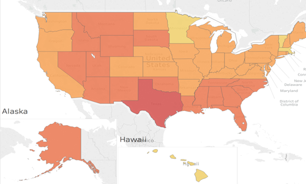
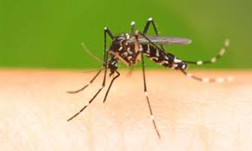
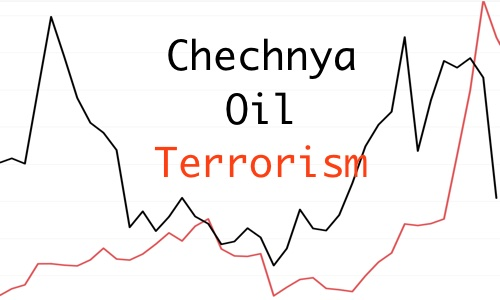
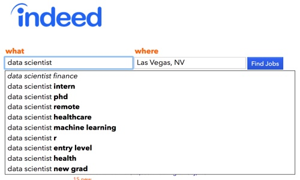

Selected impact
Results from recent roles in value-based care and healthcare navigation.
Experience
I have contributed to five startups, both as an individual contributor and as a team manager.
San Francisco, CA
Senior Data Scientist
- Helped implement a clinically informed member stratification for outreach, which raised outreach success by more than 50%.
- Introduced tooling to scale AI-assisted clinical trial preselection, which halved the human review time.
- Helped establish the analytics function. It reports on ROI, operations and clinical success.
San Francisco, CA
Senior Manager, Clinical Intelligence & Analytics
- Validated the clinical risk model.
- Set the propensity score matching methodology for outcomes analysis.
- Completed three comprehensive intervention analyses.
- Developed the logic for six clinical performance guarantees.
- Built an AI-assisted tool that cut clinical audit data preparation from hours to about 7 minutes per person.
Reston, VA
Senior Data Scientist
- Developed and maintained an ML model that predicts the risk of inpatient hospitalization.
- Trained a neural network to estimate the risk of developing a set of chronic conditions.
- Recreated the logic of the CMS risk adjustment model for the finance team.
- Created and formalized the logic for clinical metrics and utilization analysis.
Washington, DC
Instructor Associate, Data Science
- Taught in the Booz Allen Data Science 5K challenge (DC campus, Waves 2–7), about 120 students in total.
- Taught regression, supervised and unsupervised ML, PostgreSQL, ERDs and Tableau. Average student rating: 4.5 out of 5.
Earlier career: finance & general management, 1994 – 2014
- Regional Project Manager, KTIB Holding Company (2013–2014)
- General Director, Petrodata Kazakhstan (2005–2013): operator of Kazakhstan’s National Oil & Gas Data Repository and a JV with Halliburton
- General Director, MaxCom Ltd (2009–2013)
- Finance Director / Director of Finance: Sodexho-KazMunaiGaz-Service, FoodMaster JSC (2001–2004)
- Financial Analyst, Deputy Head of Planning, ACCEPT JSC (1999–2001)
- Earlier roles as an administrative coordinator, an English–Russian interpreter and an English instructor
Skills
Grouped by the problems I solve.
Causal inference & outcomes
Measuring whether a program worked and what it was worth.
Predictive modeling & ML
Risk stratification and clinical prediction.
Applied AI
Putting AI into clinical and operational workflows, with people reviewing the output.
Data & engineering
Working at scale with large datasets.
Healthcare domain
Value-based care, member engagement and clinical quality.
Communication & BI
Turning analyses into decisions for executives, clinicians and finance teams.
Projects
Notebooks from my General Assembly Data Science Immersive (2017). Each one is an HTML version of a Jupyter notebook and links to its GitHub repository.

US Health Insurance Analytics
ACA marketplace premiums by state from 2014 to 2016, including smoker vs non-smoker rates.
Fake News: From Definition to Identification
NLP text classification capstone.

West Nile Virus in Chicago
Predicting outbreaks from weather, trap and spray data.

Global Terrorism: A Bayesian Approach
Bayesian inference on terrorism trends, including their links to oil prices.

Data Scientist Salaries in 21 US Cities
Web scraping and salary classification.
Iowa Liquor Sales Forecasting
Regression-based sales forecasting.
SAT Scores Across the USA
Exploratory data analysis and visualization.
Education
- Data Science Immersive, General Assembly2017
- Certificate in Corporate Finance, Georgetown University2016
- MBA, KIMEP University1998
- Diploma in Physics (6-year program, equivalent to an MSc), Kazakh National State University1996
Awards & service
- 3rd place, Deloitte hackathon (medical insurance coverage)2017
- 1st place, Pitch Contest, Association for Computing Machinery2017
- Honorary Vice-Consul of Sweden in the Republic of Kazakhstan2011 – 2015
Let’s talk
I'm open to senior and staff data science roles in healthcare analytics, outcomes research and applied clinical AI. Coffee is on me.